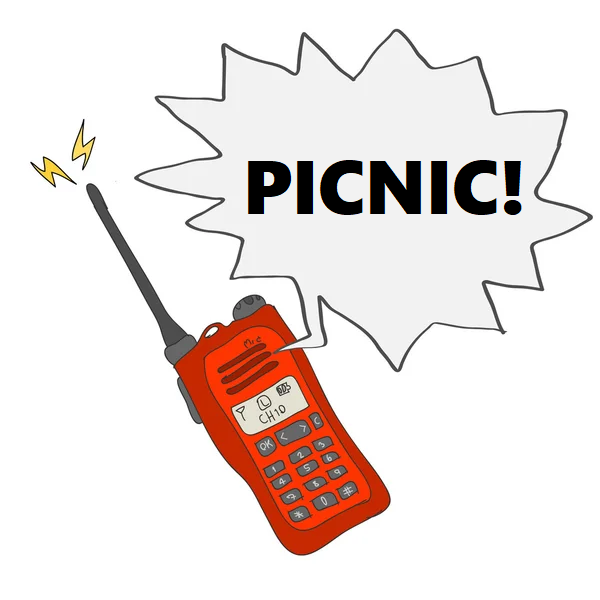
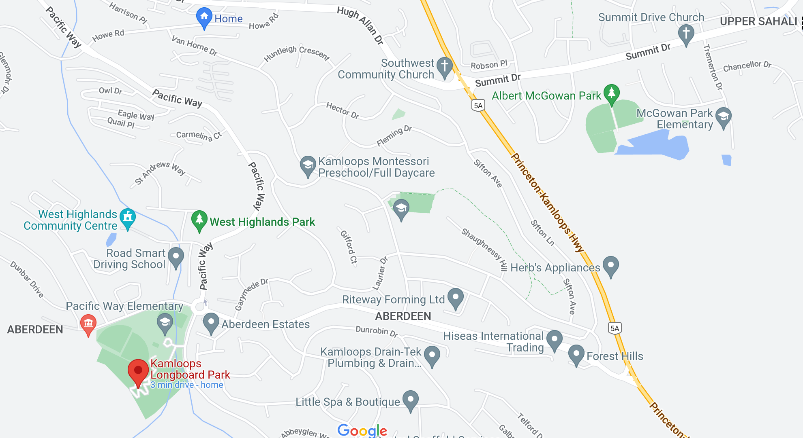

Reminder: Annual KARC Picnic Saturday May 28
Back to StoriesStory 689
Thu, 2022-05-26 18:47 — VE7FSR

The annual KARC Picnic is being held this Saturday, May 28 from noon to 4PM , at the City of Kamloops Long Board Park in Aberdeen.
It's just above the Pacific Way Elementary School, and you can access it from the upper parking lot of the school.
Please bring your own camp chair, snacks, and beverages.
There are two picnic tables, one under a shelter.
We will have a two-burner Coleman stove for anyone wanting to roast hot dogs or marshmallows.
We will be monitoring VE7RLO (147.320+ and 442.525+ PL100) for anyone that needs directions or help finding the picnic.
Looking forward to seeing you on Saturday!
For directions: https://goo.gl/maps/agLeD3YN8S5J7HvD6

PS.
Don't forget the club breakfast at Kirsten's Hideaway at 9AM Saturday.